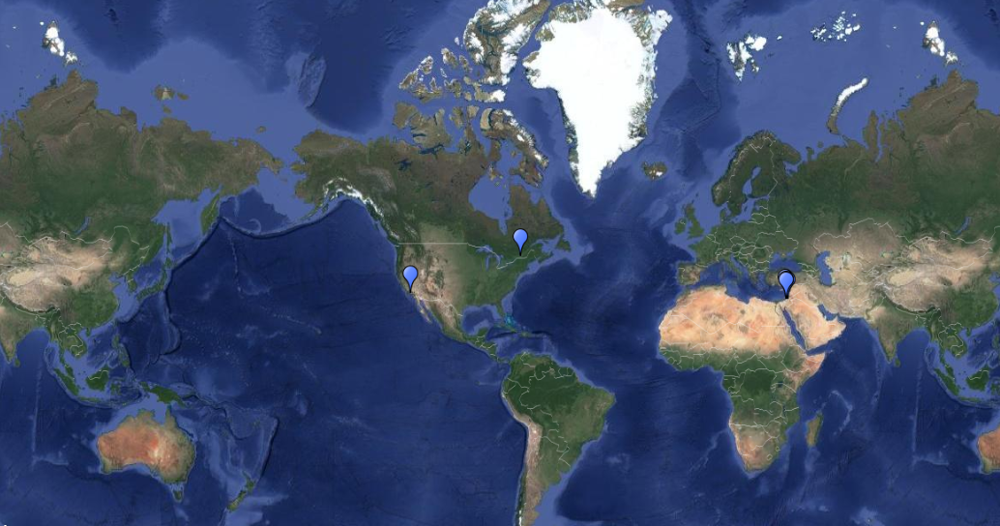

Here is the World History Page. For the Coding the Past Project for World History, we were assigned to interview a subject. All the information for it is located right below.
Interview
Interview Transcript
Above is a picture of a transcript paper. We were assigned to interview our subject and write down the transcript of the questions and answers given from the audio.
Interview Audio
Above, is the audio that was taken in the interview. If you want to listen to it, click the speaker above.
Annotated Map

Above, is a photo of an annotated map which we were assigned to do for the interview. We had to use scribble maps and pin point certain areas across the world that the interviewee mentioned about that impacted his/her life greatly. We had to add more description coorolating to what the interviewee said for each place. Click above to view full map.